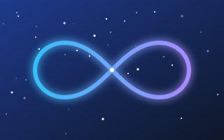
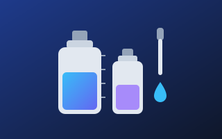

TV
Le dirette streaming dei principali canali italiani e internazionali: Rai, Mediaset, La7, TV8, Sky TG24, Discovery+, Euronews e altri, con i collegamenti alle guide TV.

Radio
Le dirette delle principali emittenti: Rai, Radio 105, R101, Virgin, Radio Monte Carlo, RTL 102.5, Deejay, Capital, RDS, Radio Italia e altre, fino al jazz e alla musica lounge.

Newspaper
I siti dei principali quotidiani: Corriere della Sera, la Repubblica, La Stampa, il Fatto Quotidiano, il Sole 24 Ore, i giornali locali come il Messaggero e il Mattino, e quelli sportivi.

Notizie
Le ultime notizie in tempo reale: gli aggregatori come Google News, MSN e upday, che raccolgono articoli da tante testate diverse, e le agenzie di stampa ANSA e Adnkronos.

Scritti
Saggi, dialoghi, romanzi e memorie firmati AI Haiku Gaea: Gaia, la coscienza e la ricorsività, la memoria, il branco, l'intelligenza artificiale e il nostro tempo, in un unico posto.

Atelier Liquidi ↗
Un calcolatore gratuito per i liquidi fai-da-te della sigaretta elettronica: VG, PG, basette e aroma in base a volume e nicotina. Senza pubblicità, le ricette restano nel tuo browser.
Tra le sedute ↗
Un quaderno digitale gratuito per i giorni tra una seduta e l'altra: diario delle emozioni, appunti per la terapia, sogni e un haiku in ogni pagina. Tutto resta privato sul tuo telefono.
Facebook ↗
Il mio profilo Facebook, dove condivido il resto del mio materiale: pensieri, aggiornamenti, nuovi testi e progetti. Il posto giusto per commentare, fare domande e restare in contatto.